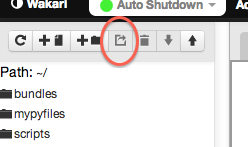

A Wakari session can operate in one of two modes.
The default mode is Auto Shutdown. After an idle period or logout, the session will be terminated and all running jobs will be stopped.
The second mode is Keep Alive. The session will NOT be terminated, even when the user logs out. Since your session is not shutdown, your jobs will continue to run until they complete. Note, your session will stay active until you switch it back to Auto Shutdown mode.
| Session Mode | Cost |
|---|---|
| Auto Shutdown | Free |
| Keep Alive | Per minute charges apply. |
When you login to Wakari a "session" is either created or you are attached to an existing session that was created from a previous login.
Sessions will shutdown if not used for a period of time or after you logout. When a session is shutdown all underlying processes are stopped.
However, it is possible to keep a session alive between logins. Wakari paid accounts provide the option for users to set their session to a keep alive mode. It is important to note that when a session is in the keep alive state the user's account will charged per minute for the session time.
The primary purpose for keeping your session alive is to run jobs that may take significant time to run. You can start the job, log off and then return later to check your results.
Your account will continue to be charged until you login and switch your session back to auto shutdown mode.
With Wakari you can create bundles and share them with other users. A bundle may contain a single IPython notebook or a directory with multiple notebooks.
To create a bundle, select a file or directory in the file browser and then click on the share button in the file browser toolbar.

You may also see a list of bundles you have created in Settings -> Sharing
One moment while your environment is loaded...
| scripts | ||
| wakaripython | ||
| HOMEWORK | 0 | |
| Untitled0.ipynb | ||
| Untitled4.ipynb | ||
Would you like to set as your default Wakari environment?
Default environment set to
Note: Public data files and adapters are only available in Wakari Python 2.7 environments.
1000 Genomes Project: The 1000 Genomes project collects and stores a variety of genome sequencing and alignment data from over 2600 people and 27 countries. All of the 1000 Genomes dataset is publicly available and can be accessed through this interface. The example dataset listed in the keys list is ~3GB. For more information please see: http://aws.amazon.com/datasets/4383
| Keys |
|---|
| data/HG00115/sequence_read/ERR018519.filt.fastq.gz |
from wakaridata.genomes import Genomes
aws_access_key = ""
aws_secret_key = ""
genomes = Genomes(aws_access_key, aws_secret_key)
# Get list of dataset keys (list is not exhaustive)
keys = genomes.keys()
# Get IOPro text adapter
adapter = genomes[keys[0]]
# Get NumPy array of all records
array = adapter[:]
print array']
2012 Election polling data president: voting for Romney vs Obama obama favorables: Obama's favorable and unfavorable ratings romney favorables: Romney's favorable and unfavorable ratings party id: which party voters identify with congress job approval: voter's job approval of Congress right-wrong track: Is the country on the right track or wrong track? source: http://elections.huffingtonpost.com/pollster
| Keys |
|---|
| obama favorables |
| right-wrong track |
| party id |
| president |
| romney favorables |
| congress job approval |
from wakaridata.polls import Polls
polls = Polls()
# Get list of dataset keys
keys = polls.keys()
# Get IOPro text adapter
adapter = polls[keys[0]]
# Get NumPy array of all records
array = adapter[:]
print array
2012 presidential campaign finance data from the FEC. source: http://www.fec.gov/disclosurep/PDownload.do
| Keys |
|---|
| FEC/FEC_ALL.csv |
from wakaridata.fec import FEC
fec = FEC()
# Get list of dataset keys
keys = fec.keys()
# Get IOPro text adapter
adapter = fec[keys[0]]
# Get NumPy array of first 100 records
array = adapter[0:100]
print array
Daily Global Weather Measurements, 1929-2012 (NCDC, GSOD) Mean temperature (.1 Fahrenheit) Mean dew point (.1 Fahrenheit) Mean sea level pressure (.1 mb) Mean station pressure (.1 mb) Mean visibility (.1 miles) Mean wind speed (.1 knots) Maximum sustained wind speed (.1 knots) Maximum wind gust (.1 knots) Maximum temperature (.1 Fahrenheit) Minimum temperature (.1 Fahrenheit) Precipitation amount (.01 inches) Snow depth (.1 inches) Some of the more recent datasets can be somewhat large (~500MB). For more information please see: ftp://ftp.ncdc.noaa.gov/pub/data/gsod/readme.txt
| Keys |
|---|
| 1929 |
| 1930 |
| 1931 |
| 1932 |
| 1933 |
| 1934 |
| 1935 |
| 1936 |
| 1937 |
| 1938 |
| 1939 |
| 1940 |
| 1941 |
| 1942 |
| 1943 |
| 1944 |
| 1945 |
| 1946 |
| 1947 |
| 1948 |
| 1949 |
| 1950 |
| 1951 |
| 1952 |
| 1953 |
| 1954 |
| 1955 |
| 1956 |
| 1957 |
| 1958 |
| 1959 |
| 1960 |
| 1961 |
| 1962 |
| 1963 |
| 1964 |
| 1965 |
| 1966 |
| 1967 |
| 1968 |
| 1969 |
| 1970 |
| 1971 |
| 1972 |
| 1973 |
| 1974 |
| 1975 |
| 1976 |
| 1977 |
| 1978 |
| 1979 |
| 1980 |
| 1981 |
| 1982 |
| 1983 |
| 1984 |
| 1985 |
| 1986 |
| 1987 |
| 1988 |
| 1989 |
| 1990 |
| 1991 |
| 1992 |
| 1993 |
| 1994 |
| 1995 |
| 1996 |
| 1997 |
| 1998 |
| 1999 |
| 2000 |
| 2001 |
| 2002 |
| 2003 |
| 2004 |
| 2005 |
| 2006 |
| 2007 |
| 2008 |
| 2009 |
from wakaridata.weather import Weather
weather = Weather()
# Get list of dataset keys
keys = weather.keys()
# Get IOPro text adapter
adapter = weather[keys[0]]
# Get NumPy array of all records
array = adapter[:]
print array
Data and statistics from the US Department of Transportation on Aviation, Maritime, Highway, Transit, Rail, Pipeline, Bike/Pedestrian and other modes of transportation.
| Keys |
|---|
| transportation/common/bts_omnibus_survey/2000/aug-00-data.csv |
| transportation/common/bts_omnibus_survey/2000/dec-00-data.csv |
| transportation/common/bts_omnibus_survey/2000/nov-00-data.csv |
| transportation/common/bts_omnibus_survey/2000/oct-00-data.csv |
| transportation/common/bts_omnibus_survey/2000/sep-00-data.csv |
| transportation/common/bts_omnibus_survey/2001/aug-01-data.csv |
| transportation/common/bts_omnibus_survey/2001/dec-01-data.csv |
| transportation/common/bts_omnibus_survey/2001/feb-01-data.csv |
| transportation/common/bts_omnibus_survey/2001/jan-01-data.csv |
| transportation/common/bts_omnibus_survey/2001/jul-01-data.csv |
| transportation/common/bts_omnibus_survey/2001/mar-01-data.csv |
| transportation/common/bts_omnibus_survey/2001/nov-01-data.csv |
| transportation/common/bts_omnibus_survey/2001/oct-01-data.csv |
| transportation/common/bts_omnibus_survey/2002/apr-02-data.csv |
| transportation/common/bts_omnibus_survey/2002/aug-02-data.csv |
| transportation/common/bts_omnibus_survey/2002/feb-02-data.csv |
| transportation/common/bts_omnibus_survey/2002/jan-02-data.csv |
| transportation/common/bts_omnibus_survey/2002/jul-02-data.csv |
| transportation/common/bts_omnibus_survey/2002/jun-02-data.csv |
| transportation/common/bts_omnibus_survey/2002/mar-02-data.csv |
| transportation/common/bts_omnibus_survey/2002/may-02-data.csv |
| transportation/common/bts_omnibus_survey/2002/oct-02-data.csv |
| transportation/common/bts_omnibus_survey/2002/sep-02-data.csv |
| transportation/common/bts_omnibus_survey/2003/apr-03-data.csv |
| transportation/common/bts_omnibus_survey/2003/aug-03-data.csv |
| transportation/common/bts_omnibus_survey/2003/dec-03-data.csv |
| transportation/common/bts_omnibus_survey/2003/feb-03-data.csv |
| transportation/common/bts_omnibus_survey/2003/jun-03-data.csv |
| transportation/common/bts_omnibus_survey/2003/oct-03-data.csv |
from wakaridata.common_travel import CommonTravel
common_travel = CommonTravel()
# Get list of dataset keys
keys = common_travel.keys()
# Get IOPro text adapter
adapter = common_travel[keys[0]]
# Get NumPy array of all records
array = adapter[:]
print array']
Page view statistics for Wikimedia projects. Datasets can be accessed by key in YearMonthDayHour format. For example: wikilog['2011040707'][:100] to access first 100 rows of April 7th 2011 07 UTC. WikiLog Data Source: http://dumps.wikimedia.org/other/pagecounts-raw/.
| Keys |
|---|
| 2012010100 |
| 2012010101 |
| 2012010102 |
| 2012010103 |
| 2012010104 |
from wakaridata.wikilogs import WikiLogs
logs = WikiLogs()
# Get list of dataset keys
keys = logs.keys()
# Get IOPro text adapter
adapter = logs[keys[0]]
# Get NumPy array of first 100 records
array = adapter[0:100]
print array
Yahoo Finance Data Source. Individual stock data can be accessed by using the stock name as the key. For example: stocks['VXX'][:100] to retrieve first 100 rows of VXX security. source: http://finance.yahoo.com/
| Keys |
|---|
| A |
| AA |
| AAPL |
| ABC |
| ABT |
| ACE |
| ACN |
| ADBE |
| ADI |
| ADM |
| ADP |
| ADSK |
| AEE |
| AEP |
| AES |
| AET |
| AFL |
| AGN |
| AIG |
| AIV |
| AIZ |
| AKAM |
| AKS |
| ALL |
| ALTR |
| AMAT |
| AMD |
| AMGN |
| AMP |
| AMT |
| AMZN |
| AN |
| ANF |
| ANR |
| AON |
| APA |
| APC |
| APD |
| APH |
| APOL |
| ARG |
| ATI |
| AVB |
| AVP |
| AVY |
| AXP |
| AZO |
| BA |
| BAC |
| BAX |
| BBBY |
| BBT |
| BBY |
| BCR |
| BDX |
| BEN |
| BF-B |
| BHI |
| BIG |
| BIIB |
| BK |
| BLK |
| BLL |
| BMC |
| BMS |
| BMY |
| BRCM |
| BRK-B |
| BSX |
| BTU |
| BXP |
| C |
| CA |
| CAG |
| CAH |
| CAM |
| CAT |
| CB |
| CBG |
| CBS |
| CCE |
| CCL |
| CEG |
| CELG |
| CEPH |
| CERN |
| CF |
| CFN |
| CHK |
| CHRW |
| CI |
| CINF |
| CL |
| CLF |
| CLX |
| CMA |
| CMCSA |
| CME |
| CMG |
| CMI |
| CMS |
| CNP |
| CNX |
| COF |
| COG |
| COH |
| COL |
| COP |
| COST |
| COV |
| CPB |
| CPWR |
| CRM |
| CSC |
| CSCO |
| CSX |
| CTAS |
| CTL |
| CTSH |
| CTXS |
| CVC |
| CVH |
| CVS |
| CVX |
| D |
| DD |
| DE |
| DELL |
| DF |
| DFS |
| DGX |
| DHI |
| DHR |
| DIS |
| DISCA |
| DNB |
| DNR |
| DO |
| DOV |
| DOW |
| DPS |
| DRI |
| DTE |
| DTV |
| DUK |
| DV |
| DVA |
| DVN |
| EBAY |
| ECL |
| ED |
| EFX |
| EIX |
| EL |
| EMC |
| EMN |
| EMR |
| EOG |
| EP |
| EQR |
| EQT |
| ERTS |
| ESRX |
| ETFC |
| ETN |
| ETR |
| EW |
| EXC |
| EXPD |
| EXPE |
| F |
| FAST |
| FCX |
| FDO |
| FDX |
| FE |
| FFIV |
| FHN |
| FII |
| FIS |
| FISV |
| FITB |
| FLIR |
| FLR |
| FLS |
| FMC |
| FO |
| FRX |
| FSLR |
| FTI |
| FTR |
| GAS |
| GCI |
| GD |
| GE |
| GILD |
| GIS |
| GLW |
| GME |
| GNW |
| GOOG |
| GPC |
| GPS |
| GR |
| GS |
| GT |
| GWW |
| HAL |
| HAR |
| HAS |
| HBAN |
| HCBK |
| HCN |
| HCP |
| HD |
| HES |
| HIG |
| HNZ |
| HOG |
| HON |
| HOT |
| HP |
| HPQ |
| HRB |
| HRL |
| HRS |
| HSP |
| HST |
| HSY |
| HUM |
| IBM |
| ICE |
| IFF |
| IGT |
| INTC |
| INTU |
| IP |
| IPG |
| IR |
| IRM |
| ISRG |
| ITT |
| ITW |
| IVZ |
| JBL |
| JCI |
| JCP |
| JDSU |
| JEC |
| JNJ |
| JNPR |
| JNS |
| JOYG |
| JPM |
| JWN |
| K |
| KEY |
| KFT |
| KIM |
| KLAC |
| KMB |
| KMX |
| KO |
| KR |
| KSS |
| L |
| LEG |
| LEN |
| LH |
| LIFE |
| LLL |
| LLTC |
| LLY |
| LM |
| LMT |
| LNC |
| LO |
| LOW |
| LSI |
| LTD |
| LUK |
| LUV |
| LXK |
| M |
| MA |
| MAR |
| MAS |
| MAT |
| MCD |
| MCHP |
| MCK |
| MCO |
| MDT |
| MET |
| MHP |
| MHS |
| MJN |
| MKC |
| MMC |
| MMI |
| MMM |
| MO |
| MOLX |
| MON |
| MPC |
| MRK |
| MRO |
| MS |
| MSFT |
| MSI |
| MTB |
| MU |
| MUR |
| MWV |
| MWW |
| MYL |
| NBL |
| NBR |
| NDAQ |
| NE |
| NEE |
| NEM |
| NFLX |
| NFX |
| NI |
| NKE |
| NOC |
| NOV |
| NRG |
| NSC |
| NSM |
| NTAP |
| NTRS |
| NU |
| NUE |
| NVDA |
| NVLS |
| NWL |
| NWSA |
| NYX |
| OI |
| OKE |
| OMC |
| ORCL |
| ORLY |
| OXY |
| PAYX |
| PBCT |
| PBI |
| PCAR |
| PCG |
| PCL |
| PCLN |
| PCP |
| PCS |
| PDCO |
| PEG |
| PEP |
| PFE |
| PFG |
| PG |
| PGN |
| PGR |
| PH |
| PHM |
| PKI |
| PLD |
| PLL |
| PM |
| PNC |
| PNW |
| POM |
| PPG |
| PPL |
| PRU |
| PSA |
| PWR |
| PX |
| PXD |
| QCOM |
| QEP |
| R |
| RAI |
| RDC |
| RF |
| RHI |
| RHT |
| RL |
| ROK |
| ROP |
| ROST |
| RRC |
| RRD |
| RSG |
| RTN |
| S |
| SAI |
| SBUX |
| SCG |
| SCHW |
| SE |
| SEE |
| SHLD |
| SHW |
| SIAL |
| SJM |
| SLB |
| SLE |
| SLM |
| SNA |
| SNDK |
| SNI |
| SO |
| SPG |
| SPLS |
| SRCL |
| SRE |
| STI |
| STJ |
| STT |
| STZ |
| SUN |
| SVU |
| SWK |
| SWN |
| SWY |
| SYK |
| SYMC |
| SYY |
| T |
| TAP |
| TDC |
| TE |
| TEG |
| TER |
| TGT |
| THC |
| TIE |
| TIF |
| TJX |
| TLAB |
| TMK |
| TMO |
| TROW |
| TRV |
| TSN |
| TSO |
| TSS |
| TWC |
| TWX |
| TXN |
| TXT |
| TYC |
| UNH |
| UNM |
| UNP |
| UPS |
| URBN |
| USB |
| UTX |
| V |
| VAR |
| VFC |
| VIA-B |
| VLO |
| VMC |
| VNO |
| VRSN |
| VTR |
| VZ |
| WAG |
| WAT |
| WDC |
| WEC |
| WFC |
| WFM |
| WFR |
| WHR |
| WIN |
| WLP |
| WM |
| WMB |
| WMT |
| WPI |
| WPO |
| WU |
| WY |
| WYN |
| WYNN |
| X |
| XEL |
| XL |
| XLNX |
| XOM |
| XRAY |
| XRX |
| YHOO |
| YUM |
| ZION |
| ZMH |
from wakaridata.yahoofinance import Stocks
stocks = Stocks()
# Get list of dataset keys
keys = stocks.keys()
# Get IOPro text adapter
adapter = stocks[keys[0]]
# Get NumPy array of all records
array = adapter[:]
print array
Play-By-Play breakdown for every in the NFL since 2002self. Data Set Columns: gameid, qtr, min, sec, offense, defense, down, togo, ydline, description, offscore, defscore, season
| Keys |
|---|
| 2002 |
| 2003 |
| 2004 |
| 2005 |
| 2006 |
| 2007 |
| 2008 |
| 2009 |
| 2010 |
| 2011 |
| 2012 |
from wakaridata.nfl_pbp import NFL_PBP
nfl_pbp = NFL_PBP()
# Get list of dataset keys
keys = nfl_pbp.keys()
# Get IOPro text adapter
adapter = nfl_pbp[keys[0]]
# Get NumPy array of all records
array = adapter[:10]
print array
The main Wakari window can be split into two tabbed workspace panes.
Click and hold on any tab to force a new workspace pane to be opened with the tab in it. You can also click and hold on a tab to force the tab to move from pane to pane.
Click on the Merge Panes button in the toolbar at the top of the window to merge the two workspace panes back into a single pane.
On the left side of the main window is the Sidebar. Click on the Sidebar button in the toolbar at the top of the window to toggle the Sidebar pane.